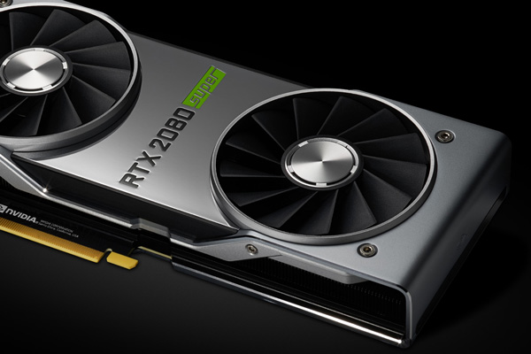

Un controlador o driver es el software que controla un dispositivo en un PC;
por ejemplo, una tarjeta de vídeo o de sonido. Los controladores actúan como
“puentes” entre las aplicaciones y los dispositivos, encargándose de que ambos
interactúen.
Si experimenta problemas de corrupción de gráficos o sonido,
es muy probable que sus controladores necesiten una actualización. Los fabricantes
de hardware actualizan continuamente el software de sus controladores para mejorar el
rendimiento de sus productos; las últimas versiones de todos los drivers deben
instalarse para garantizar una estabilidad y un rendimiento óptimos.
Cabe señalar que incluso los ordenadores nuevos raramente se distribuyen
con los controladores actualizados a las últimas versiones.
La actualización de los controladores es un proceso relativamente
sencillo que normalmente implica descargar el software desde el sitio web del
fabricante del dispositivo. Si desconoce la marca y el modelo de su tarjeta
gráfica / de sonido, su PC le ayudará a identificarla desde
el Escritorio de Windows.
